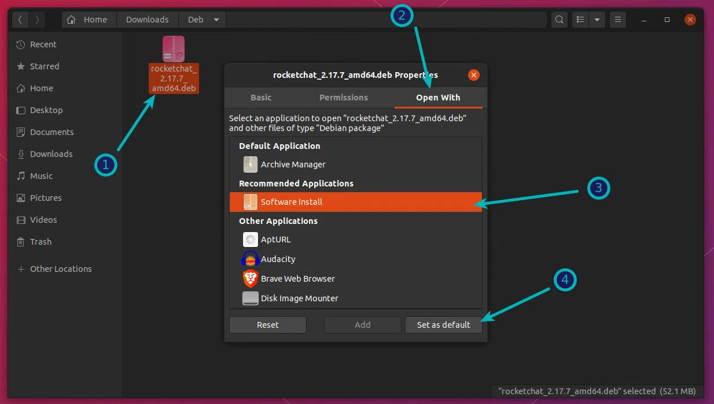
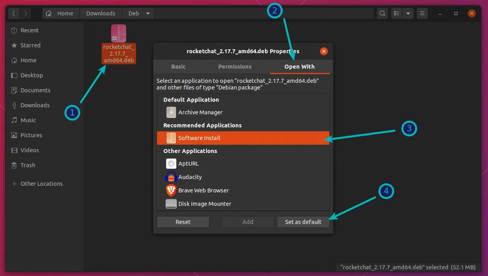

Linux Game On
Ubuntu
...Para começarmos com a instalação do sistema Linux, recomendamos que baixem o Ubuntu original sem nenhuma modificação de terceiros (distros ou distribuições) como o Kubuntu ou o Linux Mint. Já experimentamos os dois mas o Ubuntu 22.04 lts e o 20.04 contam com uma interface gráfica Gnome com sistema de janelas Wayland. O sistema Wayland de janelas faz com que elas mostrem o seu conteúdo e rode videos em segundo plano minimizados (lembra o Windows 10) além de poder criar várias áreas de trabalho e jogar os programas abertos nelas como um celular, o que pode ser útil para trabalhar. Acessem o site www.ubuntu.com e faça o download. Depois baixe o Balena Etcher para carregar a instalação do sistema em um pendrive usb de 8gb ou mais.
...Dando sequência é recomendado verificar se o disco de instalação está em sistema de arquivos GPT ou MBR pois as placas mães novas e pcs mais recentes pedem o formato GPT (Guiado) para UEFI Bios. Se a sua Bios não for do tipo UEFI pode tentar instalar em MBR se o sistema permitir. Para verificar o sistema de arquivos pesquise por Gerenciador de discos na barra de pesquisa do windows e abra o programa. Tem uma imagem na lateral esquerda mostrando o programa aberto e como ver o formato dos discos.
...Dando sequência é recomendado verificar se o disco de instalação está em sistema de arquivos GPT ou MBR pois as placas mães novas e pcs mais recentes pedem o formato GPT (Guiado) para UEFI Bios. Se a sua Bios não for do tipo UEFI pode tentar instalar em MBR se o sistema permitir. Para verificar o sistema de arquivos pesquise por Gerenciador de discos na barra de pesquisa do windows e abra o programa. Tem uma imagem na lateral esquerda mostrando o programa aberto e como ver o formato dos discos.
...Para converter um disco em GPT abra o terminal ou prompt de comando do windows. Com ele aberto escreva diskpart e aperte enter para executar o diskpart. Na janela do diskpart escreva list disk e aperte enter. Vai aparecer os discos e o numero deles e o tamanho. Localize o seu disco pelo tamanho e escreva select disk numero dele para selecionar. Depois tu pode dar um clear pra limpar e um convert to GPT para converter.
...Reiniciando o sistema e dando o boot no pendrive de instalação chegamos a tela da esquerda. Esse procedimento é fácil de fazer e é só configurar a língua do sistema e a instalação seguirá com o idioma escolhido. O layout de teclado mais comum é a primeira opção de Português BR, as demais opções é bom testar o teclado digitando as teclas na linha de teste. O mais fácil é mandar instalar a versão automática apagando o disco todo (preste a atenção referente ao disco escolhido) e escolher instalar com alguns programas que são úteis que vem porpadrão no pacote (libre office e outros).
...O Ubuntu vem com um gerenciador de atualizações automáticas. Esse programa acessa repositórios predefinidos que são servidores de atualizações disponíveis para os usuários e disponibilizados pela comunidade Linux ou pela própria empresa que criou a distribuição do Ubuntu. É mais comum e recomendado usar o terminal. O linux se baseia muito em comandos no terminal e através do terminal os usuários conseguem ter mais retorno do que querem fazer no sistema. Para abrir o Terminal pode procurar por ele nos aplicativos ou usar o atalho Ctrl+alt+T. Os comandos no terminal na maioria pedem o acesso de super usuário (equivalente a administrador do windows). Tal comando se chama sudo (super user do - fazer como super usuário). Para atualizar o computador pelo terminal é necessario usar o comando sudo apt update, para atualizar os repositórios e sudo apt upgrade ,para atualizar os programas.
...O Ubuntu baixa os drivers compatíveis pra linux genéricos automaticamente para o seu hardware, o que até já instala o som e o video no caso do pc ser um AMD. Já a Nvidia possui drivers proprietários e deve ser instalado pelo programa update-manager ou gerenciador de atualizações ou Programas e Atualizacções. Se for o caso você pode baixar os drivers nos sites dos fabricantes (Asus, As Rock, MSI, Gigabyte) e executar o package (pacote) com o instalador de software do ubuntu usando o botão direito do mouse.
...Para instalar os controles de xbox no ubuntu é necessário instalar o driver proprietário da xbox. Abra o terminal e escreva sudo apt-get install xboxdrv. Isso instala o controle de xbox 360. Para o controle de Xbox One com fio é necessário escrever sudo modprobe xpad no terminal. Você pode instalar o testador de joystick jstest pelo terminal com os comandos 1 - flatpak install --user https://flathub.org/repo/appstream/io.gitlab.jstest_gtk.jstest_gtk.flatpakrefpara instalar o instalador flatpak de pacotes e 2 - flatpak --user update io.gitlab.jstest_gtk.jstest_gtk e depois só executar o programa pelo painel de aplicativos. Podes também usar o controle na Steam para calibrar.
...O Ubuntu baixa os drivers compatíveis pra linux genéricos automaticamente para o seu hardware, o que até já instala o som e o video no caso do pc ser um AMD. Já a Nvidia possui drivers proprietários e deve ser instalado pelo programa update-manager ou gerenciador de atualizações ou Programas e Atualizacções. Se for o caso você pode baixar os drivers nos sites dos fabricantes (Asus, As Rock, MSI, Gigabyte) e executar o package (pacote) com o instalador de software do ubuntu usando o botão direito do mouse.
...Para instalar os controles de xbox no ubuntu é necessário instalar o driver proprietário da xbox. Abra o terminal e escreva sudo apt-get install xboxdrv. Isso instala o controle de xbox 360. Para o controle de Xbox One com fio é necessário escrever sudo modprobe xpad no terminal. Você pode instalar o testador de joystick jstest pelo terminal com os comandos 1 - flatpak install --user https://flathub.org/repo/appstream/io.gitlab.jstest_gtk.jstest_gtk.flatpakrefpara instalar o instalador flatpak de pacotes e 2 - flatpak --user update io.gitlab.jstest_gtk.jstest_gtk e depois só executar o programa pelo painel de aplicativos. Podes também usar o controle na Steam para calibrar.
Jogos no Ubuntu
...Existe no Ubuntu a Ubuntu Store ou Software, que nada mais é que a loja Snapstore que abre com outro nome. Por lá é possível instalar jogos automaticamente pesquisando, assim como outros aplicativos tipo a Microsoft Store ou Windows Store. Há também jogos que podem ser instalado dentro de aplicativos de lojas como a Steam e Epic Store. Mas a epic store se não tem versão pra linux pode ser instalada pelo Lutris que é um game launcher de jogos e apps windows para linux.
...O Lutris é encontrado na Snapstore assim como a Steam. Além dessas opções você pode entrar no site da sua loja de jogos pelo firefox ou navegador de intenet que preferir e baixar o arquivo de instalação de linux. Nesse caso existem formatos de arquivos diferentes que podem requerir comando diferentes para instalar. Se o jogo vier num arquivo .deb (de linux debian) você pode apertar o botão direito do mouse e mandar executar com o software install (instalador de programas). Se o jogo vier no arquivo .Sh ele é um script de instalação e deve ser marcado como executar o arquivo como programa pelas propriedades e depois acessar o terminal e digitar chmod +x filename.sh e depois sudo ./nomedoarquivo.sh
...O Lutris é encontrado na Snapstore assim como a Steam. Além dessas opções você pode entrar no site da sua loja de jogos pelo firefox ou navegador de intenet que preferir e baixar o arquivo de instalação de linux. Nesse caso existem formatos de arquivos diferentes que podem requerir comando diferentes para instalar. Se o jogo vier num arquivo .deb (de linux debian) você pode apertar o botão direito do mouse e mandar executar com o software install (instalador de programas). Se o jogo vier no arquivo .Sh ele é um script de instalação e deve ser marcado como executar o arquivo como programa pelas propriedades e depois acessar o terminal e digitar chmod +x filename.sh e depois sudo ./nomedoarquivo.sh